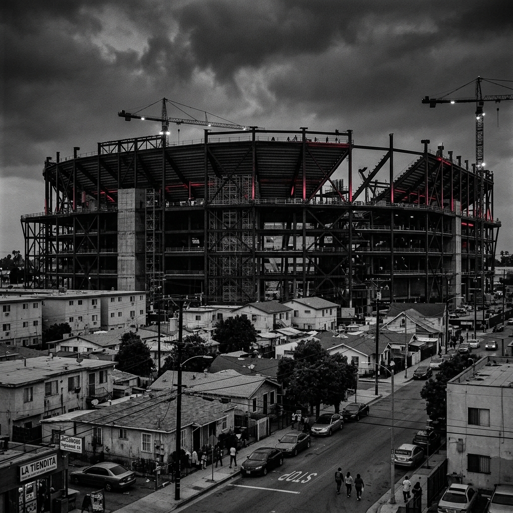

El Impacto Real
Las cifras frías y las realidades urbanas detrás del torneo de fútbol más grande del planeta.
La fiebre del suelo
El anuncio de una Copa del Mundo actúa como un catalizador inmediato para la especulación en el mercado inmobiliario. En Inglewood, a pocos kilómetros del SoFi Stadium, los precios promedio de las rentas residenciales aumentaron un 300% en menos de tres años.
Este aumento no refleja mejoras en la infraestructura del barrio para los residentes locales, sino la expectativa de alojar a turistas globales. El resultado es el desalojo sistemático de familias de bajos ingresos que han vivido en estas zonas por generaciones.

Efecto Inflacionario Global
Mega-eventos anteriores
El desplazamiento no es un accidente, es parte del modelo económico que financia estos mega-eventos de entretenimiento global.
Sudáfrica 2010
Más de 20,000 personas fueron removidas a asentamientos temporales alejados de centros comerciales.
Brasil 2014
170,000 personas fueron desalojadas o perdieron su vivienda en favelas para dar paso a obras de tránsito rápido.
Qatar 2022
Miles de trabajadores inmigrantes fueron desplazados forzosamente de complejos residenciales en el centro de Doha.